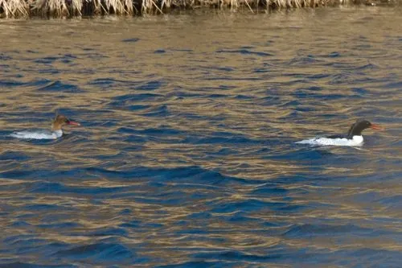

鸟类 · 动物界
中华秋沙鸭 Mergus squamatus

中国特有的珍稀秋沙鸭，雄鸟头颈墨绿、体侧有黑色鳞状斑纹，潜水捕鱼，全球种群不足一万只，属国家一级保护动物。
- 分类
- 门脊索动物门纲鸟纲目雁形目科鸭科属秋沙鸭属
- 栖息环境
- 水质清澈的山区河流、湖泊与水库，繁殖期需要河岸树洞营巢
- 地理分布
- 繁殖于俄罗斯远东和中国东北，越冬于中国南方和朝鲜半岛
- 保护级别
- IUCN 濒危（EN）；中国国家一级保护动物
物种志
中华秋沙鸭体长 58–64 cm，体重 0.9–1.2 kg。雄鸟头部和颈部呈墨绿色，体侧有黑色鳞状斑纹，胁部白色，喙和脚呈红色；雌鸟头部栗褐色，喉部白色，体侧灰色。它的喙细长、边缘带锯齿，适合捕捉滑溜的鱼，头后有两簇延长的冠羽。
中华秋沙鸭繁殖于俄罗斯远东和中国东北的森林河流，冬季南迁到中国南方和朝鲜半岛越冬。它们栖息在水质清澈、水流较急的山区河流和湖泊，以鱼类为主食，也吃水生昆虫。繁殖期在河岸树洞或岩缝中营巢，每窝产卵 8–12 枚，孵化 32–35 天。由于栖息地减少和人为干扰，全球种群不足 1 万只，被列为濒危物种，中国将其列为国家一级保护动物。
形态与习性
- 食性鱼类为主，也吃水生昆虫
- 体长58–64 cm
- 体重0.9–1.2 kg
- 繁殖每窝 8–12 枚卵，孵化 32–35 天
- 种群全球不足 1 万只
- 寿命野外约 10 年
趣味知识
- 中华秋沙鸭体侧的黑色鳞状斑纹是它与其它秋沙鸭区分的重要特征。
- 它喜欢水质清澈、水流较急的山区河流，对水环境要求较高。
- 全球中华秋沙鸭不足 1 万只，被列为濒危物种和国家一级保护动物。